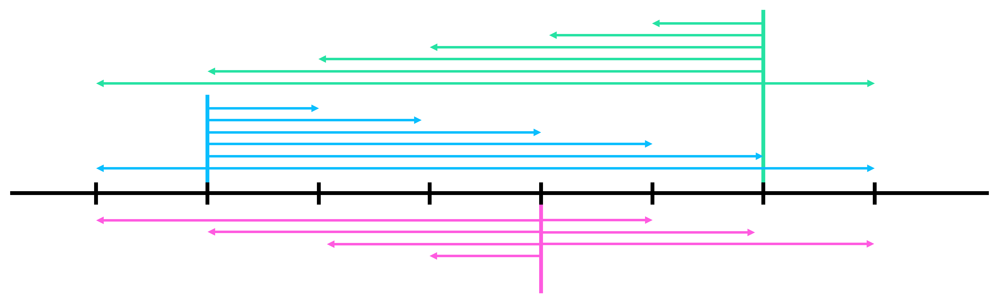
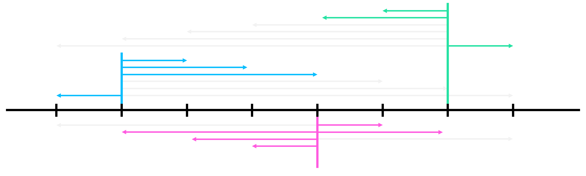

APIO 15 P2 Jakarta Skyscrapers¶
문제¶
문제 링크¶
https://www.acmicpc.net/problem/10847
https://oj.uz/problem/view/APIO15_skyscraper
문제 요약¶
\(0, 1, \cdots, N-1\)번의 \(N\)개의 빌딩이 있고, \(0, 1, \cdots, M-1\)번의 \(M\)명의 전령들이 있다.
\(i\)번째 전령은 처음에 \(B_i\)번 빌딩에서 시작하고, 한 번의 점프로 정확히 \(P_i\)개의 빌딩을 건너뛰어 이동할 수 있다.
(\(x\)번 빌딩에서 \(x+P_i\) \((x+P_i<N)\)번 빌딩으로 이동, \(x-P_i\) \((x-P_i \geq 0)\)번 빌딩으로 이동)
\(0\)번 전령이 \(1\)번 전령에게 소식을 전달하려고 하며, 소식을 전해 들은 전령은 현재 칸에 있는 다른 전령에게 소식을 전달하거나, 다른 빌딩으로 한번 점프를 할 수 있을 때 필요한 점프의 총 횟수의 최솟값을 구하여라.
제한¶
- \(1 \leq N \leq 30,000\)
- \(2 \leq M \leq 30,000\)
- \(0 \leq B_i < N\)
- \(1 \leq P_i \leq 30,000\)
입력 / 출력¶
Input
\(N\) \(M\)
\(B_0\) \(P_0\)
\(B_1\) \(P_1\)
\(\vdots\)
\(B_{M-1}\) \(P_{M-1}\)
Output
\(ans\)
풀이¶
Subtask 3¶
- \(N \leq 2,000\), \(M \leq 2,000\)
\(i\)번째 전령은 \(B_i\)번 빌딩에서 시작해서 \(B_i+kP_i\) \((0 \leq B_i+kP_i < N)\)번 빌딩으로 점프할 수 있으니, \(B_i\)번 정점에서 \(B_i+kP_i\)번 정점으로 가중치 \(|k|\)의 간선을 이어 준다. 이제, 문제는 \(B_0\)번 정점에서 \(B_1\)번 정점으로 가는 최단경로를 구하는 것이니 다익스트라 알고리즘을 사용하여 문제를 해결할 수 있다.
정점의 개수는 \(O(N)\), 간선의 개수는 최악의 경우에 \(O(NM)\)개까지 가능하니, \(O(ElogV)\) 다익스트라 알고리즘을 사용하면 \(O(NMlogN)\), \(O(E+V^2)\) 다익스트라 알고리즘을 사용하면 \(O(NM+N^2)\)에 문제를 해결할 수 있다.
CheckPoint
\(B_i\)번 정점에서 \(B_i+kP_i\) \((0 \leq B_i+kP_i < N)\)번 정점으로 가중치 \(|k|\)의 간선을 이어 만든 정점 \(O(N)\)개, 간선 \(O(NM)\)인 그래프를 생각하자. 이 그래프에서 다익스트라 알고리즘으로 \(O(N^2+NM)\)의 시간에 최단경로를 구하여 문제를 해결할 수 있다.
Complexity
Subtask 5 (Full)¶
위 그래프에서 불필요한 간선이 있는지 살펴보자.
만약 어떤 두 \(i\), \(j\)가 \(P_i=P_j\)이며, \(B_i \equiv B_j \ (mod \ P_i)\), \(B_i < B_j\)라고 가정하자.
그렇다면 \(i\)번 전령은 \(j\)번 전령의 오른쪽까지 이동할 일이 있을 때, \(j\)번 전령의 위치까지만 이동하고 \(j\)번 전령한테 소식을 전해도 된다.
같은 방법으로 \(j\)번 전령 또한 \(i\)번 전령을 넘어 왼쪽으로 이동할 필요가 없다.
따라서, \(i\)번 정점에서 나오는 간선은 \(j\)번 위치를 오른쪽으로 넘지 못하도록 하고 \(j\)번 정점에서 나오는 간선은 \(i\)번 정점을 왼쪽으로 넘지 못하도록 할 수 있다.
위와 같은 압축은 \(P_i=P_j\)이고 \(B_i \equiv B_j \ (mod \ P_i)\)인 모든 \(i\), \(j\)들을 하나로 묶어, 같은 수의 간선을 사용해도 표현할 수 있도록 해준다.
 
Observation 1
어떤 두 \(i\), \(j\)가 \(P_i=P_j\)이며, \(B_i \equiv B_j \ (mod \ P_i)\), \(B_i < B_j\)일 때, \(i\)번 전령이 오른쪽으로 \(j\)번 전령을 넘지 않고, \(j\)번 전령이 왼쪽으로 \(i\)번 전령을 넘지 않도록 이동하는 최적해가 존재한다.
이러한 압축은 간선의 개수를 얼마나 효과적으로 줄여줄 수 있을까?
\(P\)와 \(P\)로 나눈 나머지인 \(k\)를 고정하고 나면, \(P_i=P\), \(B_i \equiv k \ (mod \ P)\)인 모든 \(i\)들을 그래프로 표현하기 위해서는 \(O(\frac{N}{P_i})\)개의 간선이 필요하다.
또한, \(k\)는 \(P\)로 나눈 나머지이므로 서로 다른 \(k\)는 최대 \(P\)개 가능함을 알 수 있다.
이제, 최악의 경우에는 각 전령들이 \(P_i=1\)인 것이 \(1\)개, \(P_i=2\)인 것이 \(2\)개, ..., \(P_i=\sqrt M\)인 것이 \(\sqrt M\)개와 같이 있을 때이다.
\(P_i=1\)인 것들의 간선의 개수의 합은 \(\frac{N}{1} \cdot 1\), \(P_i=2\)인 것들은 \(\frac{N}{2} \cdot 2\), ..., \(P_i=\sqrt M\)인 것들은 \(\frac{N}{\sqrt M} \cdot \sqrt{M}\)로, 전체 합은 다음과 같다.
Observation 2
\(P_i=P_j\)이고 \(B_i \equiv B_j \ (mod \ P_i)\)인 모든 \(i\), \(j\)들을 하나로 묶어 불필요한 간선들을 제거하면, 압축된 그래프에서 사용되는 전체 간선의 개수는 \(O(N\sqrt{M})\)개이다.
이제, 위와 같이 만든 압축된 그래프는 \(O(N)\)개의 정점과 \(O(N\sqrt{M})\)개의 간선들로 구성되어 있고, 다익스트라 알고리즘을 활용하면 \(O(N\sqrt{M}logN)\)에 문제를 해결할 수 있다.
CheckPoint
Observation 1에 의해 Observation 2와 같이 그래프를 압축할 수 있고, 정점 \(O(N)\), 간선 \(O(N\sqrt{M})\)개의 압축된 그래프에서 다익스트라 알고리즘으로 \(O(N\sqrt{M}logN)\)의 시간에 최단경로를 구하여 문제를 해결할 수 있다.
구현할 때, 다익스트라의 구현이 충분히 빠르지 않으면 AC를 받기 힘드니 빠른 다익스트라의 구현을 사용할 수 있도록 주의하자.
Complexity